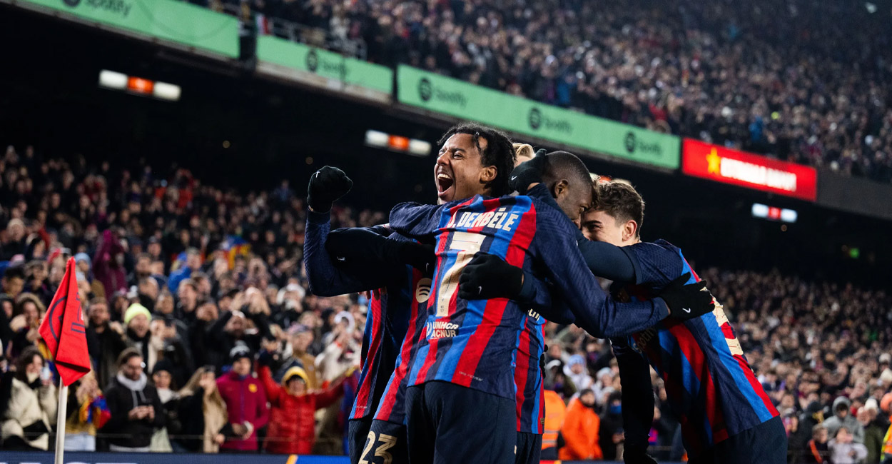

El Fútbol Club Barcelona (en catalán, Futbol Club Barcelona), conocido popularmente como Barça, es una entidad polideportiva con sede en Barcelona, España. Fue fundado como club de fútbol el 29 de noviembre de 1899 y registrado oficialmente el 5 de enero de 1903.
Tanto el club como sus hinchas reciben el apelativo de «culers» (pronunciado culés), y también, en referencia a sus colores, «azulgranas» o «blaugranas», tal como aparece en su himno, el «cant del Barça», el cual en su segunda línea menciona «som la gent blaugrana» (en castellano, «somos la gente azulgrana»). En su oficina de atención al barcelonista se atiende en los tres idiomas oficiales del club, que son el catalán, el castellano y el inglés.
A nivel institucional es uno de los cuatro clubes profesionales de fútbol del país cuya entidad jurídica no es la de sociedad anónima deportiva (S. A. D.), ya que su propiedad recae en sus más de 143 000 socios. Otra salvedad comparte con el Athletic Club y el Real Madrid Club de Fútbol al participar sin interrupción en la máxima categoría de la Liga Nacional de Fútbol Profesional, la Primera División de España, desde su establecimiento en 1929. En ella posee los honores de haber sido el primer campeón histórico de la competición, su segundo club con más títulos, y el de la máxima puntuación en una sola edición.
Sumando torneos nacionales e internacionales, es el segundo club español más laureado, a nivel nacional domina el palmarés con setenta y seis campeonatos y a nivel internacional ostenta veintidós trofeos, situado en el segundo puesto europeo. Mismo puesto ocupa como club polideportivo con más copas de Europa contando todas sus secciones profesionales —por detrás del CSKA de Moscú—, con 45.
Según las estadísticas que realiza el IFFHS, el F. C. Barcelona es el mejor equipo de fútbol europeo y mundial de la primera y segunda década del siglo xxi, y lidera el ranking global del siglo con 5228 puntos con una diferencia de 365 puntos sobre el segundo clasificado (Real Madrid C. F.). Es además el equipo de fútbol que más veces ha figurado en los podios del FIFA World Player (19) y del Balón de Oro (34).
